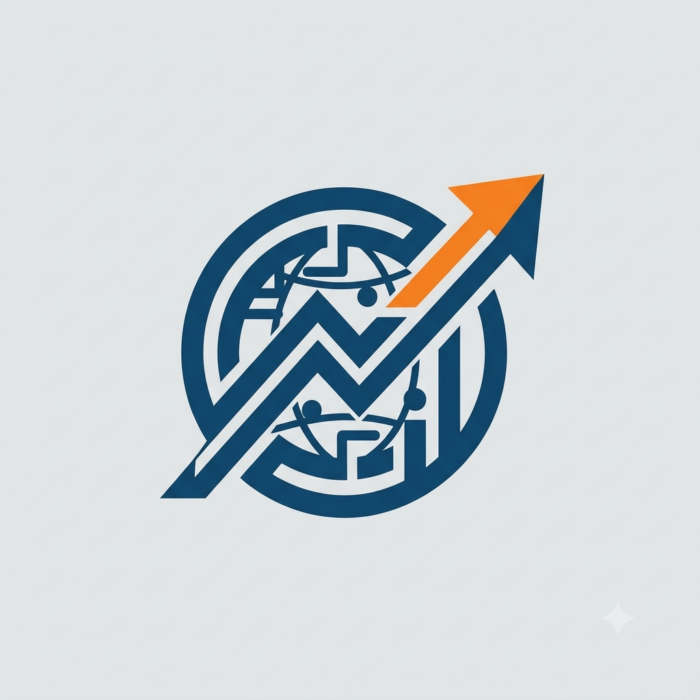

No silent command guessing
Momentum does not infer execution authority from incidental project files.

MomentumFast generation is not the finish line. Momentum helps developers make software changes reviewable, bounded, testable, and supported by evidence from the relevant workflow.
Why Momentum
That changes the engineering problem. Speed alone is not enough; teams need trustworthy evidence about what changed, what ran, and what passed.
Momentum is being built to make those checks part of the normal workflow rather than an afterthought.
How Momentum works
One shared engine turns a project and an engineering goal into an inspected, explainable workflow. Each decision carries its evidence forward.
Start with the project configuration and the work you intend to do.
Check the project manifest before contacting the target.
Establish the target state and available capabilities.
Match engineering intent to available tools and an explainable workflow.
Show the proposed work and the exact operations requiring authorization.
Evaluate operation-specific approval and present its status for review.
| Stage | What Momentum does | What you can review |
|---|---|---|
| Validate | Checks the project manifest. | Validation findings and recovery guidance. |
| Inspect | Examines the target environment. | A verified, failed or unavailable inspection outcome. |
| Plan | Resolves providers for required capabilities. | An explainable workflow plan. |
| Simulate / preview | Displays the proposed operations. | Simulation output or an exact authorization request. |
| Evaluate approval | Checks authority against the prepared operation. | The approval decision and any blocking reason. |
| Review | Presents results and diagnostics. | Evidence for the next decision, without live CLI dispatch. |
The architecture
The broader design connects interfaces, planning, providers and engineering evidence around the same core.
Project identity · Capabilities · Authorization · Evidence
A connected model of project artifacts, dependencies, history and engineering knowledge.
Describe the engineering intent, discover capabilities and prepare explicit operations.
Tools and execution collaborators implement capabilities. AI is an optional provider.
The intended feedback loop builds understanding from recorded facts.
Workflow table, both diagrams and the current implementation boundaries.
Momentum Core 1.0
Momentum Core is focused on the part of software engineering where speed and trust need to coexist: project understanding, explicit configuration, bounded execution, and evidence.
Languages
Each study gives Momentum two small command-line briefs, ten trials in all. Momentum writes the program, builds it, runs the tests it wrote and repairs failures. A trial counts only if it finishes within four repair rounds and also passes a separate fixed acceptance suite that Momentum did not write. All ten planned trials stay in the count. We publish what happened, not what we hope. Results below are from studies run on November 15, 2026 on our own test machine, with the model qwen3.6:27b. Further profile testing is under way.
| Profile (Ubuntu target) | Built and passed the fixed acceptance suite within 4 repair rounds | Label | Notes |
|---|---|---|---|
| C | 6 of 10 | Works with limits | qwen3.6:27b |
| C++ | 8 of 10 | Works with limits | qwen3.6:27b. A 20-trial confirmation run is planned before this label is final. |
| TypeScript | 5 of 10 | Works with limits | qwen3.6:27b |
| JavaScript | 5 of 10 | Works with limits | qwen3.6:27b |
| Rust | In development and testing | untested | No current result is shown. |
| Go | In development and testing | untested | No current result is shown. |
How to read this: 10 trials per profile, two small briefs, one model (qwen3.6:27b). The acceptance suite is a separate test set Momentum did not write; it is not a feature of the product and its contents are not published. These are observed rates on these briefs and this model, not guarantees. A label is a label, not a lock: you can still choose a language that has a lower label, and Experimental ones ask for a one-line confirmation first.
| Profile | Offered in / target | Status |
|---|---|---|
| Python with Tk | Mac app, Ubuntu target | In development and testing |
| Swift with SwiftUI (macOS) | Mac app, macOS target | In development and testing |
| C with GTK | Mac app, Ubuntu target | In development and testing |
| C++ with GTK | Mac app, Ubuntu target | In development and testing |
| PowerShell | Mac app, Ubuntu target | In development and testing |
| Shell (sh) | Mac app, Ubuntu target | In development and testing |
| Bash | Mac app, Ubuntu target | In development and testing |
| zsh | Mac app, Ubuntu target | In development and testing |
| C | Windows target | In development and testing |
| C++ | Windows target | In development and testing |
| Rust | Windows target | In development and testing |
| Go | Windows target | In development and testing |
| JavaScript | Windows target | In development and testing |
| TypeScript | Windows target | In development and testing |
| PowerShell | Windows target | In development and testing |
| Shell (sh) | Windows target | In development and testing |
| Bash | Windows target | In development and testing |
| zsh | Windows target | In development and testing |
| Python with Tk | Windows target | In development and testing |
| Python with Tk and SQLite, Ubuntu | With SQLite | In development and testing |
| Python with Tk and SQLite, Windows | With SQLite | In development and testing |
Profiles in development and testing have no published result yet. A profile is listed with results only after its study has run and been checked.
Models
Momentum runs on a local model, so your code stays on your machine, or on a provider you choose. Here is what we have measured and what we have not.
| Model | Runs | Memory needed | Quality evidence | Status |
|---|---|---|---|---|
| qwen3.6:27b | Locally, on your GPU | Tested on a 32 GB graphics card (AMD Radeon AI PRO R9700). Minimum for other machines is still being measured. | Results above: 5 to 8 of 10 on the four measured profiles. | Tested for 1.0 |
| Qwen3.6-35B-A3B | Locally | About 20 GB at 4-bit (estimate, not measured by us) | None yet. Would need its own 10-run study per profile. | untested |
| Hosted models (your own provider account) | Provider servers | None on your machine | No Momentum trials yet, so we make no claim. | untested |
Very large models that need more memory than a graphics card holds can run from system RAM, but slowly. We are not planning on that for 1.0. Any model change gets its own measured study before we state results for it.
Design principles
Momentum does not infer execution authority from incidental project files.
If the required execution context is unavailable or ambiguous, Momentum should warn or block.
Inspection is separate from explicitly approved configuration changes.
Positioning
“AI-driven, verification-centered software engineering.”
Momentum is built for developers who care about more than raw generation speed: the useful measure is a verified correct change, achieved with the time and effort the work actually requires.
Momentum Core 1.0
Momentum Core 1.0 is planned for macOS and Windows at the same time. A Linux version is planned about a month after 1.0.
One-time purchase for Momentum Core 1.0, with a year of updates.
Then $19.99 per year if you want further updates. Final pricing and availability remain subject to release qualification.Planned, not built
Pro is a future plan for deeper automation and larger workflows beyond Core 1.0. It is not a finished or verified feature set, and its price and upgrade terms are not set. Local Scout, verification, approvals and remote execution are part of Core and do not need Pro.
| Area | In Core 1.0 | Planned for Pro |
|---|---|---|
| Scout | Local project analysis | Deeper analysis across projects, historical trends, continuous analysis |
| Automation | Guided build, test, verification and bounded repair | Scheduled unattended work, overnight analysis, prioritization, morning reports |
| AI coordination | Choice of model and provider | Multi-model coordination, cross-validation, performance-based routing, cost and quality policies |
| Multiple machines | Remote targets | Distributed workers, fleet management, larger test and repair workflows |
| Audit and history | Approval and execution evidence, readable history, basic export | Advanced search, retention policies, centralized history, organizational reports and integrations |
| Game development | General work on game source code | Dedicated Unity, Unreal and Godot adapters and build, test and package workflows |
FAQ
No. Momentum is designed to work alongside your existing editor or IDE rather than replace it.
Project inspection and onboarding should remain read-only until an explicit, bounded configuration action is approved.
Core 1.0 is planned for macOS and Windows together, with Linux about a month later. A platform is only described as working for what we have actually tested.
Everything released during your first year keeps working, permanently. If you want newer versions and new language profiles after that, renewal is $19.99 for another year. It is optional.
Only to activate. After that the license is checked on your machine, with a 30-day grace period if a check ever cannot be completed. Up to five of your devices can use one license, and you can free a seat yourself.
No. Momentum is being positioned as AI-driven, verification-centered software engineering: faster development with explicit configuration, bounded actions, and evidence.